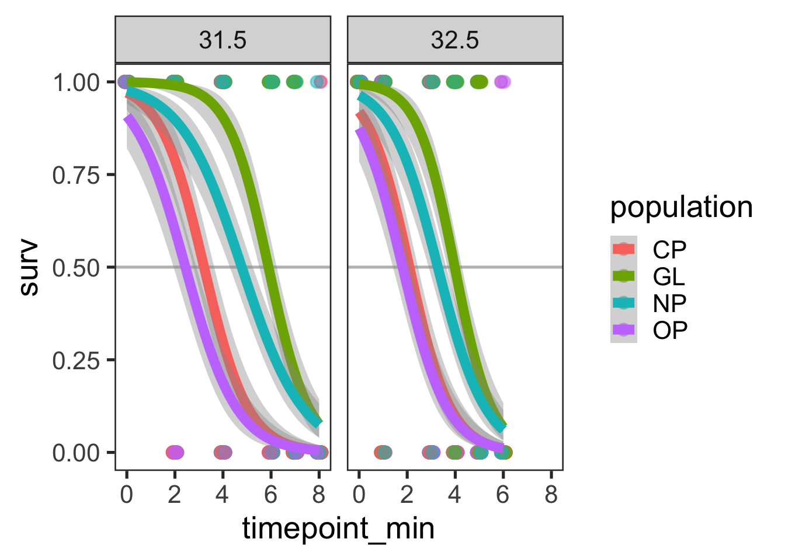
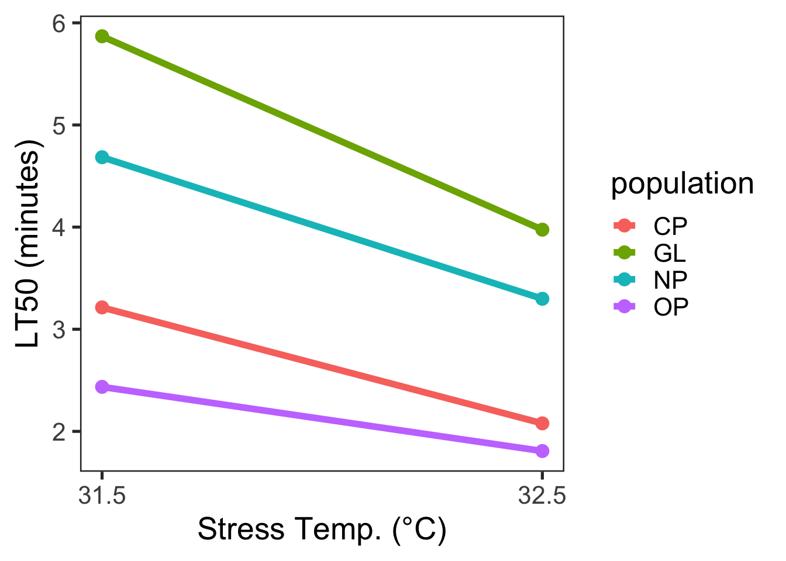
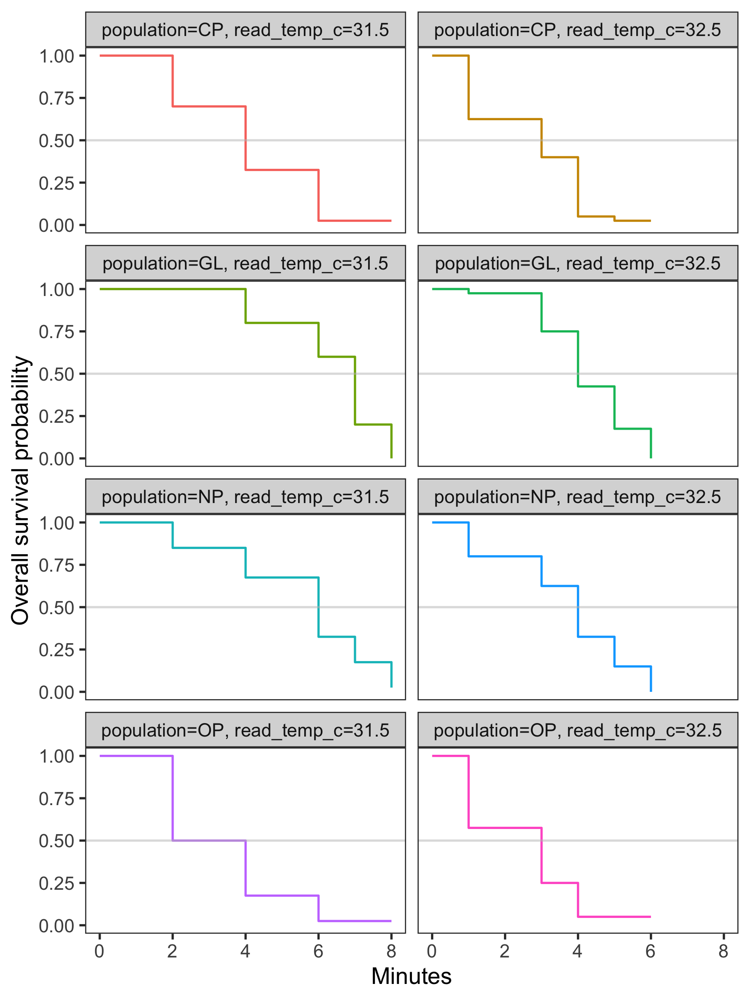
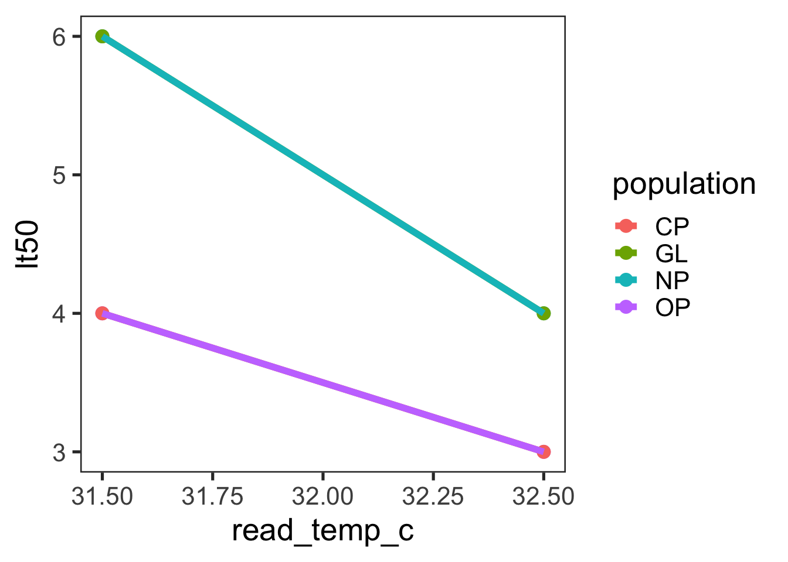
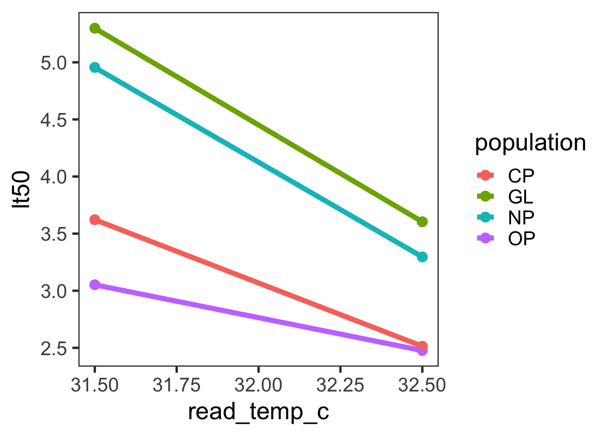
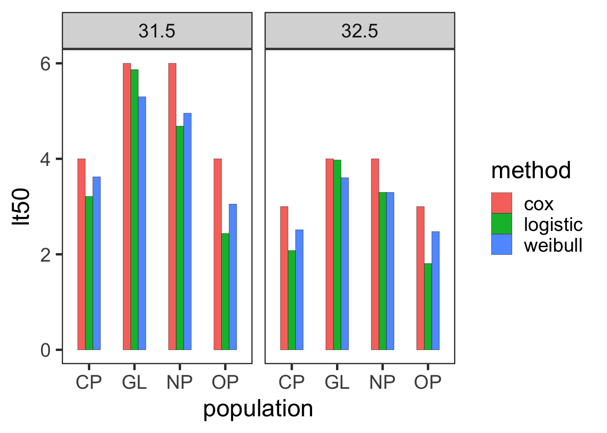
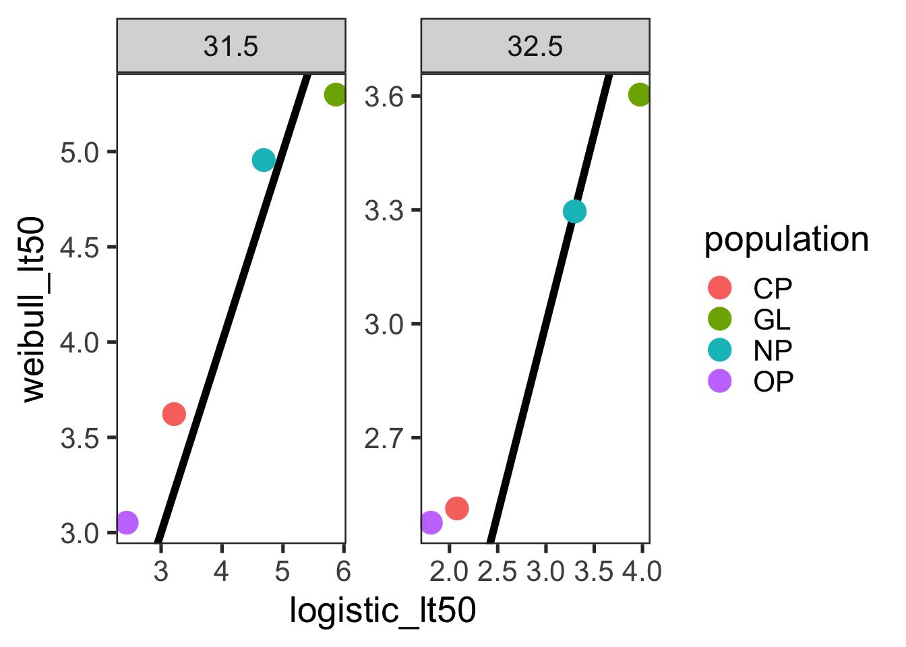
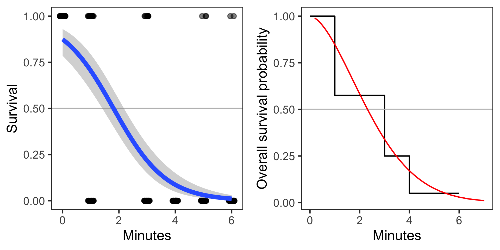
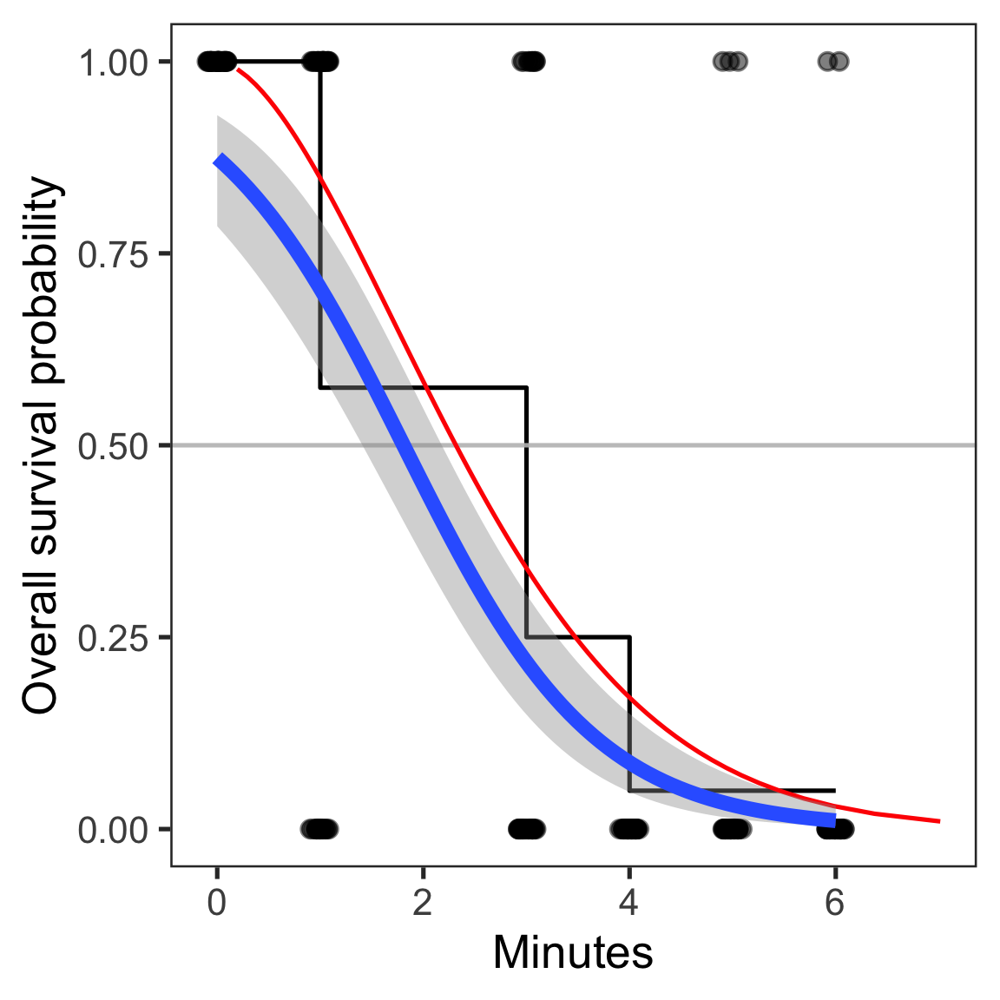

knitr::opts_chunk$set(
echo = knitr::is_html_output(),
message = FALSE,
warning = FALSE,
collapse = TRUE
)Estimating Median Lethal Times from Continuous Survival Data
## Approach 1
library(lme4)
library(lmerTest)
library(MASS)
library(emmeans)
## Approach 2
library(survival)
library(ggsurvfit)
library(coxme)
## General Need
library(tidyverse)Background
As part of the thermal tolerance landscape approach, we need reliable estimates of survival times at a range of temperatures. While many studies use individual knockdown times for these estimates, this approach can be technically or logistically challenging for small aquatic ectotherms. As an alternative, we will estimate median survival times (LT50) from survival data, assessed at regular intervals.
Example Data
The lab has a custom HTML-based survival logger that collects survival data for individual copepods. This logger outputs data indicating whether an individual copepod is responding or not during a check point. This data can be translated to binary survival data (1 indicates still alive, 0 indicates dead).
Simulated data is included for use in this document.
surv_data = read.csv(file = "../../Background/lt50_methods/survival_assay_2026-08-15.csv") %>%
mutate(assay_num = as.numeric(as.factor(experiment_date)),
surv = if_else(responding == "yes", 1, 0))
glimpse(surv_data)
## Rows: 1,920
## Columns: 15
## $ experiment_date <chr> "2026-08-15", "2026-08-15", "2026-08-15", "2026-0…
## $ observer <chr> "MCS", "MCS", "MCS", "MCS", "MCS", "MCS", "MCS", …
## $ water_bath_id <int> 1, 1, 1, 1, 1, 1, 1, 1, 1, 1, 1, 1, 1, 1, 1, 1, 1…
## $ set_temp_c <int> 32, 32, 32, 32, 32, 32, 33, 33, 33, 33, 33, 33, 3…
## $ read_temp_c <dbl> 31.5, 31.5, 31.5, 31.5, 31.5, 31.5, 32.5, 32.5, 3…
## $ stopwatch_start_time <chr> "2026-08-16T01:47:58.292Z", "2026-08-16T01:47:58.…
## $ timepoint_min <int> 0, 2, 4, 6, 7, 8, 0, 1, 3, 4, 5, 6, 0, 2, 4, 6, 7…
## $ well_id <chr> "A1", "A1", "A1", "A1", "A1", "A1", "A1", "A1", "…
## $ population <chr> "GL", "GL", "GL", "GL", "GL", "GL", "NP", "NP", "…
## $ responding <chr> "yes", "yes", "yes", "no", "no", "no", "yes", "ye…
## $ sex <lgl> NA, NA, NA, NA, NA, NA, NA, NA, NA, NA, NA, NA, N…
## $ stage <lgl> NA, NA, NA, NA, NA, NA, NA, NA, NA, NA, NA, NA, N…
## $ length <lgl> NA, NA, NA, NA, NA, NA, NA, NA, NA, NA, NA, NA, N…
## $ assay_num <dbl> 1, 1, 1, 1, 1, 1, 1, 1, 1, 1, 1, 1, 2, 2, 2, 2, 2…
## $ surv <dbl> 1, 1, 1, 0, 0, 0, 1, 1, 0, 0, 0, 0, 1, 1, 1, 0, 0…Different approaches for estimating median lethal time
Median lethal times (LT50) can be estimated in several ways. The two major approaches we will consider are 1) using a logistic regression to estimate the time at which 50% of the individuals stop responding and 2) using a survival analysis to identify at which time step does survival drop below 50%.
This document will run both approaches for the simulated data. At the end of the document, we will directly compare the estimated LT50 values.
Approach 1 - Logistic regression
The logistic regression approach uses the binary survival data at each time point. As shown below, this approach models the probability of survivorship across time. These regressions can be used to estimate the time at which the probability of survivorship is 50%.
ggplot(surv_data, aes(x = timepoint_min, y = surv, colour = population)) +
facet_wrap(read_temp_c~.) +
geom_hline(yintercept = 0.5, colour = "grey") +
geom_point(position = position_jitter(height = 0, width = 0.1),
alpha = 0.5, size = 3) +
geom_smooth(method = "glm",
method.args = list(family = "binomial"),
linewidth = 3) +
theme_bw(base_size = 20) +
theme(panel.grid = element_blank())
Analyzing the logistic regression
This data would be analyzed using a mixed-effects logistic regression, where individual survival is modeled as a function of time, population and temperature (with all interactions). Random effects will need to be refined, but as a start might include well ID (to account for position within the water bath), and assay number.
surv.model = glmer(data = surv_data,
surv ~ timepoint_min * population * read_temp_c +
(1 | well_id) +
(1 | assay_num),
family = binomial)
summary(surv.model)
## Generalized linear mixed model fit by maximum likelihood (Laplace
## Approximation) [glmerMod]
## Family: binomial ( logit )
## Formula: surv ~ timepoint_min * population * read_temp_c + (1 | well_id) +
## (1 | assay_num)
## Data: surv_data
##
## AIC BIC logLik deviance df.resid
## 1307.3 1407.4 -635.7 1271.3 1902
##
## Scaled residuals:
## Min 1Q Median 3Q Max
## -6.5474 -0.3292 -0.0984 0.3124 15.5851
##
## Random effects:
## Groups Name Variance Std.Dev.
## well_id (Intercept) 8.765e-02 2.960e-01
## assay_num (Intercept) 1.412e-10 1.188e-05
## Number of obs: 1920, groups: well_id, 20; assay_num, 8
##
## Fixed effects:
## Estimate Std. Error z value Pr(>|z|)
## (Intercept) 37.38420 20.73008 1.803 0.0713 .
## timepoint_min 1.41073 6.17926 0.228 0.8194
## populationGL 27.55031 45.34426 0.608 0.5435
## populationNP -18.39748 30.25684 -0.608 0.5432
## populationOP -24.88765 26.57431 -0.937 0.3490
## read_temp_c -1.07470 0.64464 -1.667 0.0955 .
## timepoint_min:populationGL 1.01162 9.77737 0.103 0.9176
## timepoint_min:populationNP 4.88674 7.88539 0.620 0.5354
## timepoint_min:populationOP 1.99781 8.34765 0.239 0.8109
## timepoint_min:read_temp_c -0.07978 0.19301 -0.413 0.6793
## populationGL:read_temp_c -0.76183 1.40974 -0.540 0.5889
## populationNP:read_temp_c 0.59372 0.94260 0.630 0.5288
## populationOP:read_temp_c 0.75051 0.82708 0.907 0.3642
## timepoint_min:populationGL:read_temp_c -0.03526 0.30564 -0.115 0.9082
## timepoint_min:populationNP:read_temp_c -0.14537 0.24673 -0.589 0.5557
## timepoint_min:populationOP:read_temp_c -0.05860 0.26087 -0.225 0.8223
## ---
## Signif. codes: 0 '***' 0.001 '**' 0.01 '*' 0.05 '.' 0.1 ' ' 1
## optimizer (Nelder_Mead) convergence code: 0 (OK)
## boundary (singular) fit: see help('isSingular')
car::Anova(surv.model, type = "III")
## Analysis of Deviance Table (Type III Wald chisquare tests)
##
## Response: surv
## Chisq Df Pr(>Chisq)
## (Intercept) 3.2522 1 0.07133 .
## timepoint_min 0.0521 1 0.81941
## population 1.9733 3 0.57796
## read_temp_c 2.7793 1 0.09549 .
## timepoint_min:population 0.4471 3 0.93034
## timepoint_min:read_temp_c 0.1709 1 0.67934
## population:read_temp_c 1.7788 3 0.61956
## timepoint_min:population:read_temp_c 0.3969 3 0.94089
## ---
## Signif. codes: 0 '***' 0.001 '**' 0.01 '*' 0.05 '.' 0.1 ' ' 1Estimate Median Survival Times
While the model above examines variation across the entire model, individual LT50 values (for each population and stress temperature) will need to be pulled from models run on subsets of the data.
The code below provides a modified version of the commonly used dose.p function that can be used to estimate the time where the probability of mortality is 0.5.
dose.p.glmm = function(obj, cf = 1:2, p = 0.5) {
f = family(obj)
eta = f$linkfun(p)
b = fixef(obj)[cf]
x.p = (eta - b[1L]) / b[2L]
names(x.p) = paste("p = ", format(p), ":", sep = "")
pd = -cbind(1, x.p) / b[2L]
SE = sqrt(((pd %*% vcov(obj)[cf, cf]) * pd) %*% c(1, 1))
res = structure(x.p, SE = matrix(SE), p = p)
class(res) = "glm.dose"
res
}
# Group the data by variables that create the groups of interest
nested_data = surv_data %>%
group_by(read_temp_c, population) %>%
nest()
lt50_values = nested_data %>%
mutate(
# Fit binomial model for each group of interest
model = map(data, ~ glmer(surv ~ timepoint_min +
(1 | well_id) +
(1 | assay_num),
family = binomial, data = .x)),
dose_p_res = map(model, ~ {
est = dose.p.glmm(.x, p = 0.5) # Extract LT50 for each subset model
data.frame(lt50 = as.numeric(est), se = attr(est, "SE"))})) %>%
unnest(dose_p_res) %>% #Unnest and tidy the dataframe
dplyr::select(read_temp_c, population, lt50, se)Once estimated, we can examine variation in LT50 values across stress temperatures. This is the data used to estimate thermal tolerance landscape parameters.
ggplot(lt50_values, aes(x = read_temp_c, y = lt50, colour = population)) +
geom_point(size = 3) +
geom_line(linewidth = 2) +
labs(x = "Stress Temp. (°C)",
y = "LT50 (minutes)") +
scale_x_continuous(breaks = c(31.5, 32.5)) +
theme_bw(base_size = 20) +
theme(panel.grid = element_blank())
Approach 2 - Survival Analysis
Data in this format is more often analysed using a group of approaches called Survival Analysis.
Reformatting the data for survival analyses
The survival analysis uses ‘time to event’ data instead of binary survival data. This can be extracted from the binary survival data. It’s important to note that the encoding practices for this kind of data differ from that of binary survival data. Here, a 0 indicates that the individual is ‘censored’ (i.e. remains responsive for the entire duration of the experiment), whereas a 1 indicates an ‘event’ (in this case mortality).
In the code below, we 1) determine whether an individual should be censored, and 2) filter the data to represent just the first time point where an individual was recorded as dead or the last time point for censored individuals. This new data set represents the ‘time to event’ for each individual - either the amount of time before the individual was recorded as dead or the last time point of the experiment for censored individuals.
censor_check = surv_data %>%
ungroup() %>%
filter(read_temp_c == 31.5 & timepoint_min == 8 |
read_temp_c == 32.5 & timepoint_min == 6) %>%
group_by(read_temp_c, timepoint_min) %>%
count(surv) #There should be six censored individuals
event_data = surv_data %>%
ungroup() %>%
group_by(experiment_date, read_temp_c, well_id) %>%
arrange(timepoint_min) %>%
mutate(censor = if_else(last(responding == "yes"), "censored", "not censored"),
event = if_else(surv == 0, 1, 0)) %>%
filter(event == 1 | censor == "censored") %>%
filter((timepoint_min == min(timepoint_min) & censor == "not censored") |
(timepoint_min == max(timepoint_min) & censor == "censored")) %>%
filter(timepoint_min > 0)
table(event_data$censor)
##
## censored not censored
## 6 314Survival data in this format is typically examined by showing the proportion surviving at the different timepoints, as shown below. Each facet here represents one subset (population x stress temperature combination).
survfit(Surv(event_data$timepoint_min, event_data$event) ~ population + read_temp_c, data = event_data) |>
ggsurvfit() +
facet_wrap(.~strata, nrow = 4) +
geom_hline(yintercept = 0.5, colour = "grey", alpha = 0.5) +
labs(
x = "Minutes",
y = "Overall survival probability"
) +
theme_bw(base_size = 20) +
theme(panel.grid = element_blank(),
legend.position = "none")
Estimate Median Survival Times
For survival data with interacting factors (e.g. population and stress temperature), we need to use a Cox Model. This model can be used to then predict/extract median lethal times for each of the groups of interest.
# Fit a Cox model with an interaction between population and stress temperature
fit_cox = coxph(Surv(event_data$timepoint_min, event_data$event) ~ population * read_temp_c, data = event_data)
# Create a newdata frame for the specific groups you want LT50s for
pop_list = unique(event_data$population)
num_temps = length(unique(event_data$read_temp_c))
new_dat = data.frame(
population = rep(pop_list, each = num_temps),
read_temp_c = unique(event_data$read_temp_c),
assay_num = 1,
well_id = "A1")
# Compute survfit using the fitted cox model for the levels in newdata
fit_surv = survfit(fit_cox, newdata = new_dat)
# Estimate LT50 for each of the groups
cox_lt50 = new_dat %>%
mutate("lt50" = as.numeric(quantile(fit_surv, probs = 0.5)$quantile)) %>%
arrange(read_temp_c)The estimated LT50 values are shown below. Note that the LT50 values are all integers. Values estimated by this approach are restricted to the values of the time points where survival was checked. Refer back to the survival plot above - decreases in survival are acute, rather than continuous. As such, even though survival curves are quite distinct, the estimated median survival times collapse to just a couple values.
ggplot(cox_lt50, aes(x = read_temp_c, y = lt50, colour = population)) +
geom_point(size = 3) +
geom_line(linewidth = 2) +
theme_bw(base_size = 20) +
theme(panel.grid = element_blank())
Approach 2b - A Weibull Regression
An alternative here is to use a Weibull model instead of a Cox model. This will essentially smooth out the intervals between sampling, while retaining the benefits of the survival analysis framework. Note that for now we use the assay number and well ID as fixed effects - implementing random effects for a Weibull regression was not straightforward during these preliminary trials. We may return to this at a future date.
# Fit a Weibull survival model with interacting covariates for population and temperature
weibull = survreg(Surv(timepoint_min, event) ~ population * read_temp_c + assay_num + well_id,
data = event_data,
dist = "weibull")
# Predict median (50% survival time)
median_time = predict(weibull, type = "quantile",
p = 0.5, newdata = new_dat)
# Estimate LT50 for each of the groups
weibull_lt50 = new_dat %>%
mutate("lt50" = predict(weibull, type = "quantile",
p = 0.5, newdata = new_dat))The estimated LT50 values from the Weibull regression are continuous.
ggplot(weibull_lt50, aes(x = read_temp_c, y = lt50, colour = population)) +
geom_point(size = 3) +
geom_line(linewidth = 2) +
theme_bw(base_size = 20) +
theme(panel.grid = element_blank())
Comparing Approaches
These three approaches (logistic regression, Cox model, and Weibull regression) provide three different estimates of LT50 values. These values can vary quite strongly, with the estimates from logistic regression tending to be lower than the two survival analysis metrics.
comp_data = lt50_values %>%
inner_join(cox_lt50, by = c("read_temp_c", "population")) %>%
inner_join(weibull_lt50, by = c("read_temp_c", "population")) %>%
select(read_temp_c, population, "logistic_lt50" = lt50.x, "cox_lt50" = lt50.y, "weibull_lt50" = lt50)
comp_data %>%
pivot_longer(cols = c("logistic_lt50", "cox_lt50", "weibull_lt50"),
names_to = c("method", NA),
names_sep = "_",
values_to = "lt50") %>%
ggplot(aes(x = population, y = lt50, fill = method)) +
facet_wrap(read_temp_c~.) +
geom_bar(stat = "identity",
color = "black", linewidth = 0.1,
position = position_dodge(),
width = 0.5) +
theme_bw(base_size = 20) +
theme(panel.grid = element_blank())
The two continuous LT50 estimates (logistic and Weibull) tend to be positively correlated.
ggplot(comp_data, aes(x = logistic_lt50, y = weibull_lt50, colour = population)) +
facet_wrap(.~read_temp_c, scales = "free") +
geom_abline(slope = 1, intercept = 0, linewidth = 2) +
geom_point(size = 5) +
theme_bw(base_size = 20) +
theme(panel.grid = element_blank())
Individual values can still differ strongly. The OP value for the 31.5 stress temperature, for example, differs by almost a minute. The plots below show the logistic regression alongside the survival plot for this subset. The Weibull regression is shown as the red line on the survival plot.
log_plot = surv_data %>%
filter(population == "OP" & read_temp_c == 32.5) %>%
ggplot(aes(x = timepoint_min, y = surv)) +
geom_hline(yintercept = 0.5, colour = "grey") +
geom_point(position = position_jitter(height = 0, width = 0.1),
alpha = 0.5, size = 3) +
geom_smooth(method = "glm",
method.args = list(family = "binomial"),
linewidth = 3) +
labs(x = "Minutes",
y = "Survival") +
theme_bw(base_size = 20) +
theme(panel.grid = element_blank())
op_data = event_data %>%
filter(population == "OP" & read_temp_c == 32.5)
# Fit a Weibull survival model with interacting covariates for population and temperature
op_weibull = survreg(Surv(timepoint_min, event) ~ 1,
data = op_data,
dist = "weibull")
p = seq(0.01, 0.99, by = 0.01)
pred_time = predict(op_weibull, type = "quantile", p = p)[1,]
op_weib_data = data.frame(time = pred_time,
survival = 1 - p)
surv_plot = survfit(Surv(op_data$timepoint_min, op_data$event) ~ 1, data = op_data) %>%
ggsurvfit() +
geom_hline(yintercept = 0.5, colour = "grey", alpha = 0.9) +
geom_line(data = op_weib_data, aes(x = time, y = survival),
colour = "red") +
labs(
x = "Minutes",
y = "Overall survival probability"
) +
theme_bw(base_size = 20) +
theme(panel.grid = element_blank())
ggpubr::ggarrange(log_plot, surv_plot)
The three approaches are overlaid on the same plot here to highlight the differences.
op_subset = surv_data %>%
filter(population == "OP" & read_temp_c == 32.5)
survfit(Surv(op_data$timepoint_min, op_data$event) ~ 1, data = op_data) %>%
ggsurvfit() +
geom_hline(yintercept = 0.5, colour = "grey", alpha = 0.9) +
geom_line(data = op_weib_data, aes(x = time, y = survival),
colour = "red") +
geom_point(data = op_subset,
aes(x = timepoint_min, y = surv),
position = position_jitter(height = 0, width = 0.1),
alpha = 0.5, size = 3) +
geom_smooth(data = op_subset,
aes(x = timepoint_min, y = surv),
method = "glm",
method.args = list(family = "binomial"),
linewidth = 3) +
labs(
x = "Minutes",
y = "Overall survival probability"
) +
theme_bw(base_size = 20) +
theme(panel.grid = element_blank())
Recommendations
The Weibull regression approach combines the benefits of survival analysis (e.g. handling censored data correctly) with the intuitive aspects of the logistic regressions (e.g. continuous rather than integer LT50 estimates). Even without the implementation of the random effects, this approach is likely the best option for our needs.